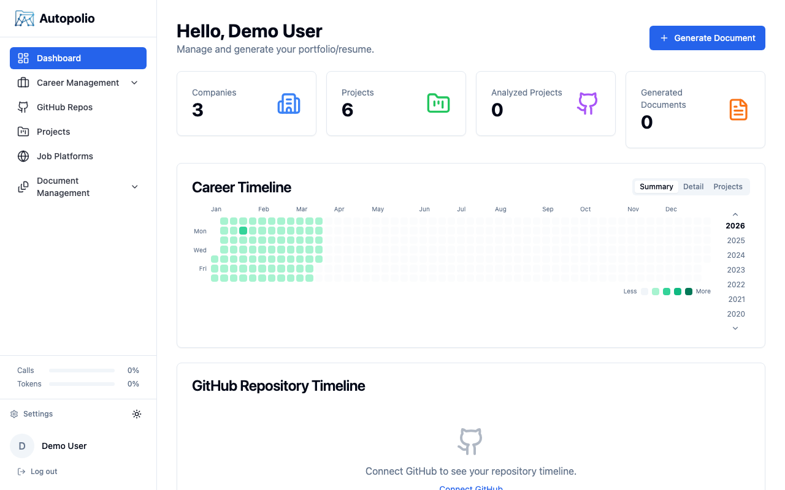
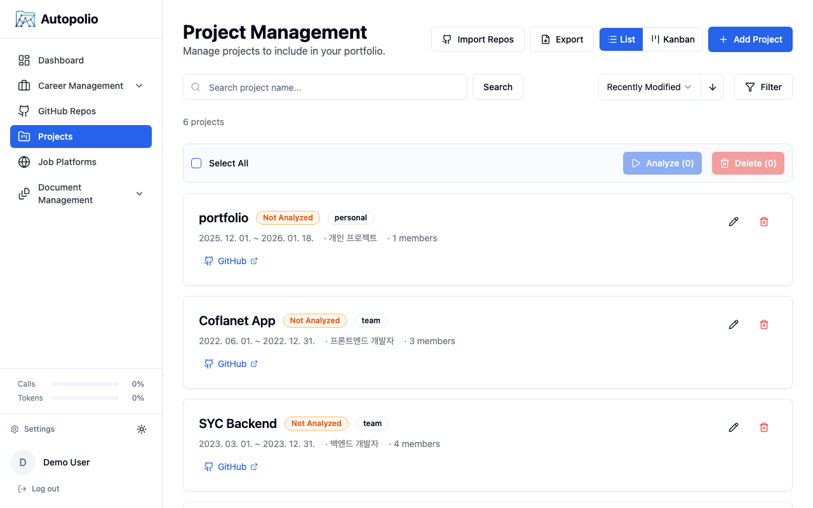
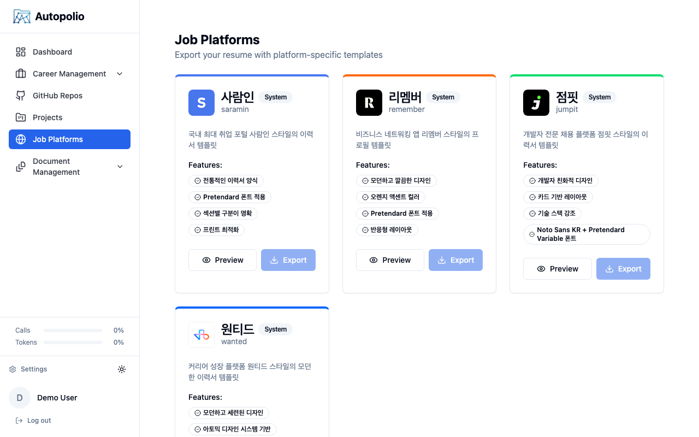
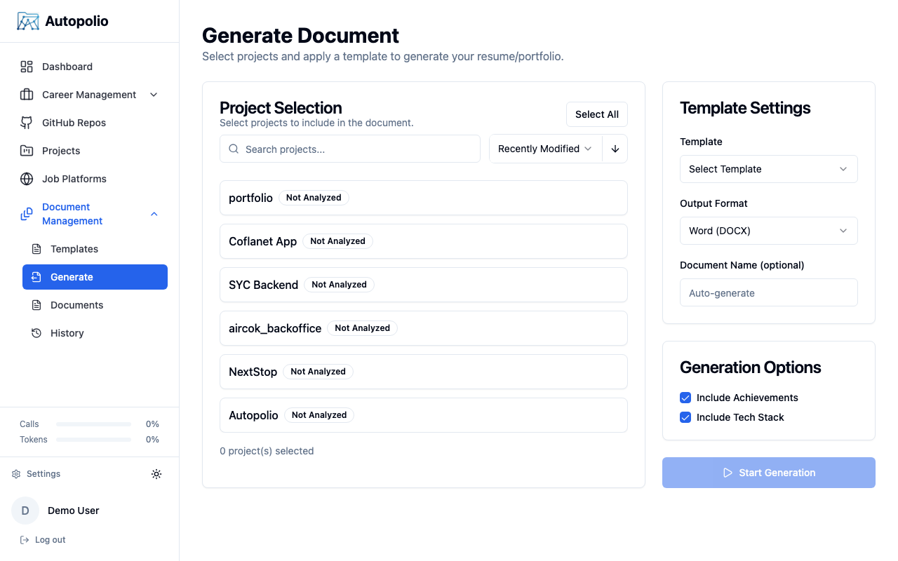

Autopolio analyzes your commit history, auto-detects 200+ technologies, and generates tailored resumes for top job platforms — powered by GPT-4, Claude, and Gemini.
From raw GitHub data to polished, platform-ready resumes — fully automated.
A structured pipeline inspired by enterprise data workflows — from raw repository data to publication-ready documents.
A clean, focused interface built for developers — dark by default, fast by design.




A modern full-stack architecture with desktop support, multi-LLM integration, and automated CI/CD.
Clone the repo, configure your environment, and launch with Docker.
# 1. Clone the repository git clone https://github.com/sehoon787/autopolio.git && cd autopolio # 2. Configure environment cp .env.example .env # then edit .env with your API keys # 3. Start with Docker docker-compose up -d
Frontend runs at http://localhost:3035 · API docs at http://localhost:8085/docs